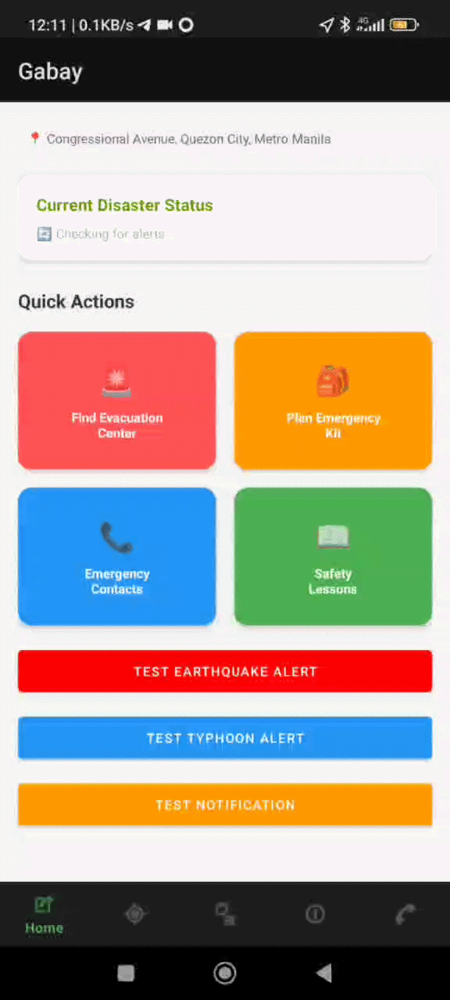

Group Capstone · New Era University · 2025 – 2026
Gabay
An Android app for disaster evacuation guidance in the Philippines
// walkthrough

// Note: the demo location is simulated.
About
Gabay is the Android companion to the LifelineTech disaster preparedness web platform. It finds the nearest evacuation centers around the user and routes them to one, so they don't have to search the web while a disaster is happening.
It draws on a bundled dataset of 1,600+ evacuation centers across the Philippines, fetches recent earthquake data, and keeps working in a limited way when the internet doesn't. I developed the app with AI assistance.
Key Features
-
Evacuation Routing with Fallbacks
Routes the user to the nearest evacuation center through a four-step fallback chain: two Valhalla servers, then OSRM, then straight-line routing that needs no internet.
-
"Path is Blocked?" Rerouting
A button that redirects the user to a new route or to another evacuation center, like rerouting after a wrong turn in a navigation app. Cycles through up to 5 alternate centers.
-
Live ETA Tracking
The estimated time of arrival updates every 3 seconds while the user is navigating.
-
Recent Earthquake Data
Fetches recent earthquake data from the USGS API within a set radius of the user.
Known Limitations
// honest scope
Online routing needs an internet connection. When every source fails, the straight-line fallback takes over, but it doesn't follow actual roads. Evacuation center data is bundled at build time, so it isn't updated in real time, and the app is tuned for Metro Manila, where routing accuracy depends on Valhalla and OSRM coverage. The app sends no alerts: the earthquake feed shows recent events, not real-time warnings (during testing it surfaced a quake from over two weeks earlier), and typhoon data is not currently fetched.
Source Code
Includes the routing architecture, data sources, and future work.